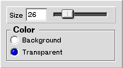

|
|
Eraser-tool
The eraser-tool erases the contents of image for some part. The tool is used by clicking on the image on the part that needs erasing. The shape of erased area is circular. The eraser can then be moved along the surface of the image to erase it further.
Settings
Figure 1 shows the contents of the tool-setup-window when it is displaying the setup for the eraser-tool.
Figure 1: Setup view for the eraser-tool.
| 
|
- Size
- This option controls the size of the eraser. The eraser always erases a circular area and this value is the circle's diameter in pixels.
- Background
- When this option is selected, the color to be erased to is the background-color.
- Transparent
- When this option is selected, the eraser will erase the image to transparent.
|